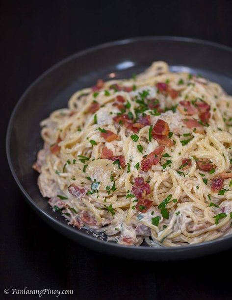

Filipino Style Creamy Carbonara

Filipino-style Pasta Carbonara loaded with crisp bacon, sauteed mushrooms, and flavorful cream sauce is a tasty pasta dish the whole family is sure to love. It's so easy to make and perfect for family dinners or special occasions.
Ingredients
- 250 grams Spaghetti
- 3/4 cup Chopped Bacon
- 1 cup Water
- 1 packet 250ml NESTLÉ All Purpose Cream
- 4 tablespoons grated cheese
- 1 sachet MAGGI® Magic Sarap® 8g
- 1/8 teaspoon Ground Pepper
How to cook?
- Cook pasta according to package directions. Drain well and set aside.
- In a pan, cook the bacon until crispy and set aside.
- Using the same pan, add the butter and saute the garlic until light brown. Add sliced mushrooms and all purpose flour. Mix well.
- Add dissolved Knorr Cream of Mushroom Soup and allow to simmer until slightly thick.
- You may add spinach leaves at this point. Add the all purpose cream. Season with salt and pepper to taste. Mix well. Do not simmer or boil as cream will curdle. Turn off the heat and toss in the cooked pasta.
- Arrange the pasta in a plate then top with crispy bacon and Parmesan cheese.